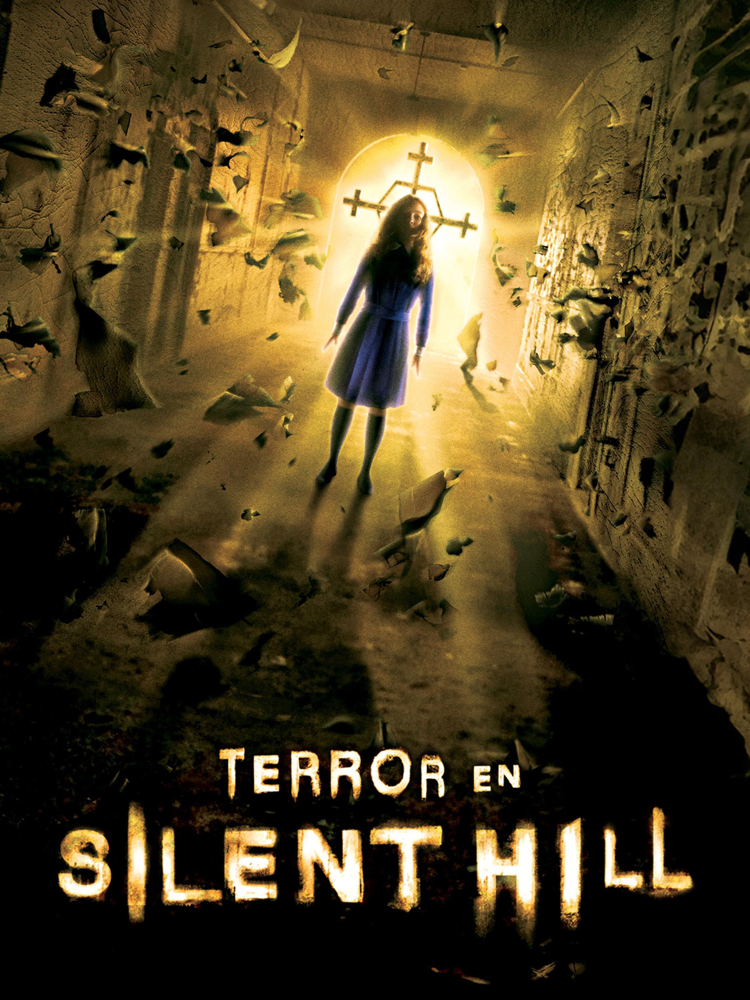

6. Película (Terror en Silent Hill)
Estrenada en 2006 y dirigida por Christophe Gans, Terror en Silent Hill (Silent Hill) es la adaptación cinematográfica que traslada la atmósfera del primer videojuego a la pantalla grande. La obra es ampliamente reconocida como una de las mejores adaptaciones cinematográficas de un videojuego gracias a su fiel recreación estética.

Sinopsis y Cambios Clave
La historia sigue a Rose Da Silva, una madre desesperada que decide llevar a su hija adoptiva Sharon al pueblo fantasma de Silent Hill en busca de respuestas a sus constantes episodios de sonambulismo. A diferencia del videojuego original de 1999, el protagonista masculino Harry Mason es sustituido aquí por un rol materno principal, aunque se mantiene la esencia de la búsqueda desesperada dentro del pueblo brumoso.
Fidelidad y Apartado Técnico
El largometraje destaca por haber contado con la colaboración directa de Akira Yamaoka en la supervisión de la banda sonora, utilizando los temas industriales y melancólicos originales del juego. Asimismo, las transiciones hacia el Otro Mundo (u Otherworld) se recrearon utilizando efectos prácticos y escenarios móviles que simulan el desprendimiento de las paredes y la llegada del óxido de manera idéntica a las mecánicas que se experimentan en la consola.